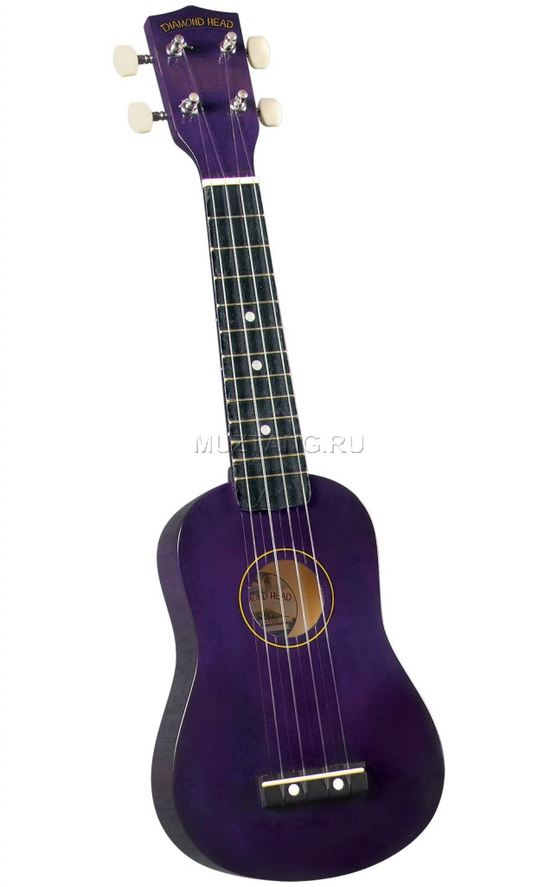

Укулеле сопрано
Описание товара
Гавайская гитара укулеле — традиционный акустический музыкальный инструмент.
Характеристики товара
| Подробные характеристики | ||
 |
Мензура | 540 мм |
|
Верхняя дека | Липа |
|
Обечайка и задняя дека | Липа |
|
Накладка грифа | Палисандр |
|
Цвет | Натуральный |
Подробное описание товара
Корпус